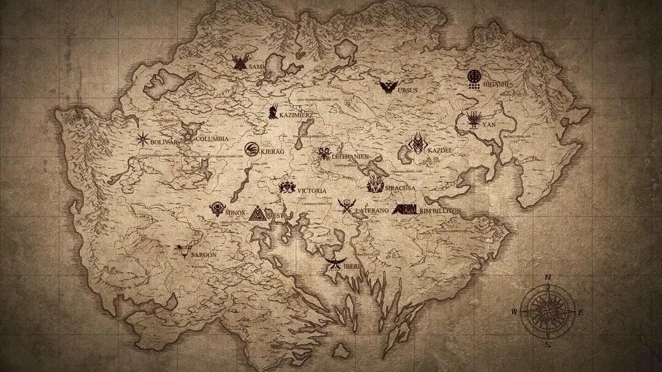

Terra is a vast land constantly shaped by Catastrophes and Originium.
Rhodes Island seeks a way forward for the Infected across this suffering land.
Terra is a fictional planet inhabited by demihumans. Originium, the key resource, causes Catastrophes. Exposure to active Originium leads to incurable Oripathy, and the Infected face widespread discrimination. Rhodes Island searches for a cure and protects the Infected, while Reunion resists oppression by force. Major powers compete with one another, alongside underlying threats such as the Seaborn and relics of ancient civilizations

Arknights site